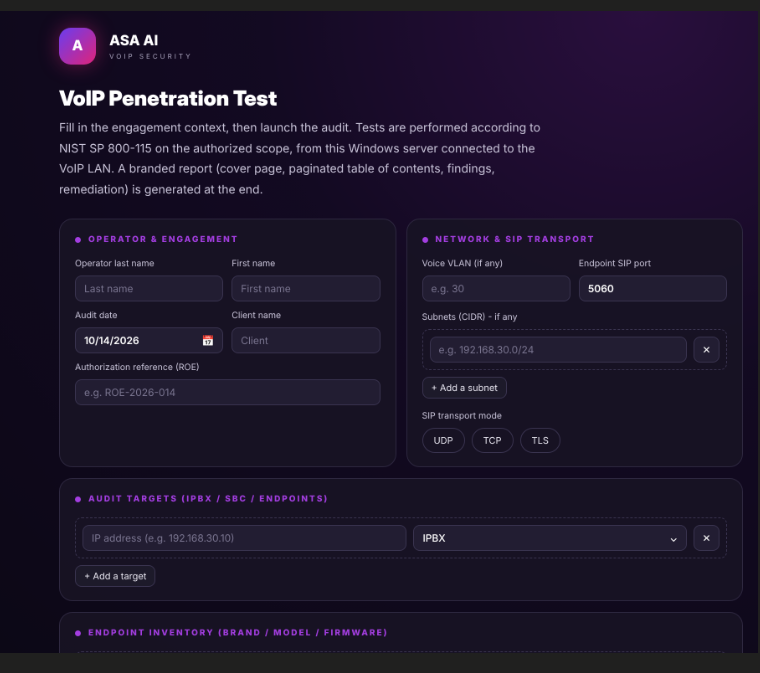
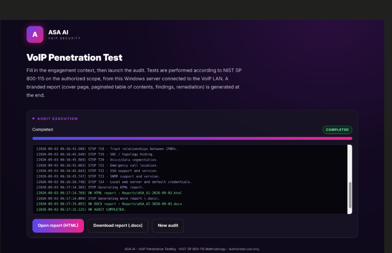
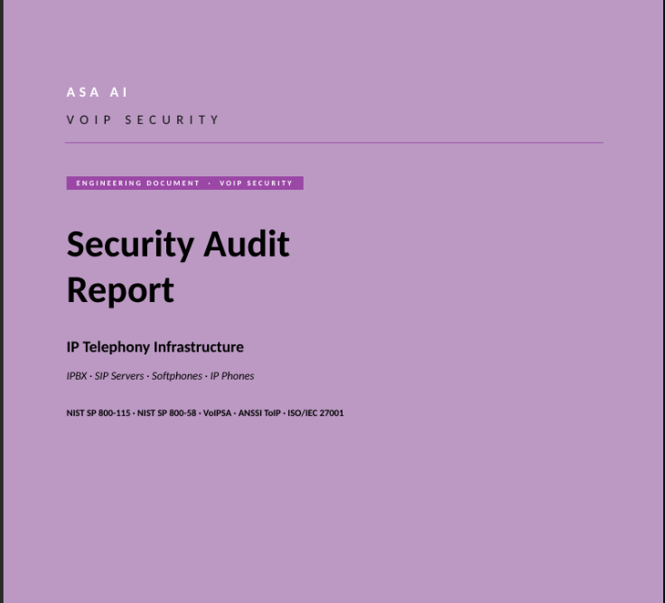

See your phone system
the way an attacker does.
Your IPBX, SBC and IP phones often expose more than you think: open SIP services, guessable extensions, unencrypted media, default credentials. Our audit tool runs 24 non-intrusive tests on your VoIP network and delivers a professional report, with the threat behind each finding and a remediation prioritized by target.

24 tests. Every layer of your voice network.
From the first SIP packet to the management plane, the audit covers what a real attacker would probe, without disrupting production calls.
Exposure & SIP services
IPBX, SBC and endpoints reachable on the voice LAN, SIP over UDP, TCP and TLS, and what each one reveals about itself.
Extension enumeration
Whether valid extensions can be listed from the outside, the first step of every credential and toll-fraud attack.
Authentication
How SIP registration and authentication hold up against weak secrets and credential guessing.
SBC & trust relationships
Topology hiding on the SBC and trust relationships between IPBXs that an attacker could abuse.
RTP & encryption
Whether voice streams are protected or travel in clear, and how media ports are exposed.
Denial of service
How your voice platform behaves under abnormal signaling load, checked in a controlled way.
Segmentation & emergency calls
Voice / data separation and the location information attached to emergency calls.
Admin plane hygiene
SSH and SNMP versions, embedded web servers and default credentials left on equipment.
Define the scope. Launch. Deliver the report.
A clear interface that takes you from engagement to deliverable in a single session.
Set up the engagement
Operator, authorized scope and ROE reference, IPBX / SBC / endpoint targets, voice VLAN, subnets, SIP transport (UDP, TCP, TLS) and endpoint inventory with brand, model and firmware.
Watch the audit run live
The 24 tests run before your eyes, step by step, with a real-time log: discovery, SIP enumeration, authentication, SBC, RTP, resilience and management plane.

Hand over a report your client can act on
One click opens the HTML report or downloads the Word document, ready to be shared with management and technical teams.

A deliverable, not a raw scan output.
- Premium cover page and paginated table of contents.
- Findings ranked by severity, so the critical issues come first.
- The threat behind each finding, explained in plain terms.
- Remediation prioritized by target: IPBX, SBC, phones, softphones.
- HTML and Word (.docx), ready to edit, brand and deliver.
Try it on your own network. 5 scans, free.
Get your trial access
- Book your demo with a business e-mail and phone number.
- Our team validates your request.
- You receive your license key and the download by e-mail.
- Enter the key the first time you launch the tool.
Each key allows 5 scans and is bound to one workstation. Need a higher quota or an assisted audit? Just ask.
Requirements
- Windows 10 / 11 or Windows Server, 64-bit.
- A workstation connected to the VoIP LAN to be audited.
- Prior written authorization from the owner of the target systems (Rules of Engagement).
The portal opens locally on 127.0.0.1. Nothing to install on your phone system.
Find the weak spots in your VoIP. Before someone else does.
Book your demo: we show you the tool in action, then you receive your trial access.
Screens captured on the ASA AI lab. Source code is not distributed.